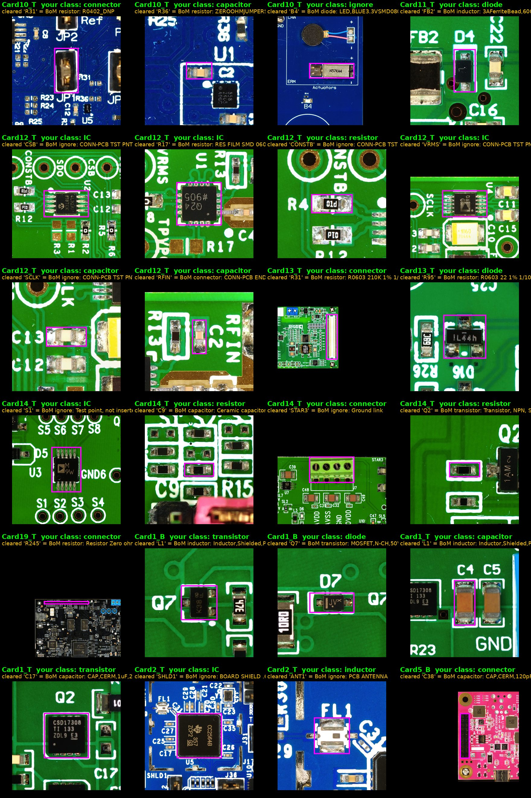

Magenta box = the box. Green = your class (kept). Yellow = the designator that was on the box and what the BoM says that designator is. The designator belonged to a neighbouring part or test point, so it was removed. Nothing else changed.
